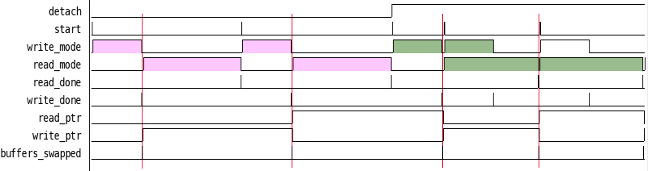

This example shows how to use the detach keyword option an a child sequence to allow it to run optionally in parallel to children from other bins. In this example we have a stream of data coming from a data source that bursts a chunk of data that needs buffered for a read source that runs at a slower burst rate. To deal with this we take a chunk of memory and divide in two. Initially we give the lower half to the capture device to burst data into. When it has filled the lower half, we then want the read source to take over the lower half and give the upper to the capture source to use. We want the option of making memory access simultaneous or not. When the capture and read source are done, we want to swap the buffers again and repeat swapping buffers.
Here is the seq code that impliments this double buffer memory access controller that contains an input port called detach that controls whether memory access is simultaneously or not.
1 2 3 4 5 6 7 8 9 10 11 12 13 14 15 16 17 18 19 20 21 22 23 24 25 26 27 28 29 30 31 32 33 34 35 36 37 38 39 40 41 42 43 44 45 46 47 48 49 50 51 52 53 54 55 56 57 58 59 60 61 62 63 64 65 66 67 68 69 | import seq
from seq import Bin, Sequence as Seq
# inputs
detach = seq.Signal(name="detach", width=1)
read_running = seq.Signal(name="read_running", width=1)
read_done = seq.Signal(name="read_done", width=1)
write_done = seq.Signal(name="write_done", width=1)
# output registers
write_ptr = seq.Signal(name="write_ptr", width=1, init=0)
read_ptr = seq.Signal(name="read_ptr", width=1, init=0)
write_mode = seq.Signal(name="write_mode", width=1, init=0)
read_mode = seq.Signal(name="read_mode", width=1, init=0)
buf_swap = seq.Signal(name="buffers_swapped", width=1, init=0)
capture= Bin.Bin(
name = "capture_buf",
regs = [ write_ptr, read_ptr, write_mode, buf_swap ],
children = [],
seqs = [
Seq.Serial(
name="capture",
subseqs = [ Seq.Set(set=dict(write_mode=1)),
Seq.Sync(sync=write_done),
Seq.Set(set=dict(write_mode=0)),
]
),
Seq.Serial(
name="sync_then_buf_swap",
subseqs = [ Seq.Sync(sync=read_running, active_high=False),
Seq.Trigger(reg="buffers_swapped"),
Seq.Serial(subseqs=[Seq.Set(set=dict(read_ptr=write_ptr)),
Seq.Toggle(reg="write_ptr"),]),
]
)
]
)
read= Bin.Bin(
name = "read_buf",
register_done=True,
regs = [ read_mode, ],
children = [],
seqs = [
Seq.Serial(name="read",
subseqs=[ Seq.Set(set=dict(read_mode=1)),
Seq.Sync(sync=read_done),
Seq.Set(set=dict(read_mode=0)),
],
running=read_running, # export running signal as the sync
),
],
)
buf = Bin.Bin(
name = "buf_ctl",
regs = [],
children = [read, capture,],
seqs = [
Seq.Serial(name="buf",
subseqs=[ "capture",
"sync_then_buf_swap",
Seq.Child(sequence="read", detach=detach), ]),
],
)
buf.vlog_dump(recurse=True) # create verilog
buf.vlog_gen_instance() # create a verilog instantatiation
|
The hierarch for this controller is that the capture_buf and read_buf bin are children of the buf_ctl bin.:
+---------------+
| buf_ctl |
+---------------+
/ \
/ \
+---------------+ +---------------+
| capture_buf | | read_buf |
+---------------+ +---------------+
Let’s take a top down approach in explaining this example by starting with the buf_ctrl bin as defined in lines 56-66. The buf_ctl bin does not control any registers directly (line 58) but is in control of the read and capture bins (line 59). It has one Serial sequence (lines 61) that executes three child sequence: “capture”, “sync_then_buf_swap”, and “read”. This is a pretty good verbal description of what we want to have happen. First we want to capture a buffer (“capture”), then we want to wait for any read than might be occuring in parallel from the previous capture (“sync”). Once we are sync’d, we can swap the buffer pointers (“then_buf_swap”). With the buffer pointers swapped, we can kick off a the read (“read”).
Notice that the “read” instantiation on line 64 is uses the detach key word and hooks it up the the detach signal, which becomes an import port. If detach is not low, then the “read” sequence will run to completion, otherwise, the “read” sequence will get kicked off in the background and the sequence will return immediately. If the buf_ctl is run in a loop, then when detached, a “capture” sequence will start up while the “read” sequence is still running. Then, if the capture sequence is longer, the sync condition of the “sync_then_buf_swap” will be true and there will be no waiting, otherwise if the “read” is still occuring when the “capture” completes, the “sync_then_buf_swap” will stall until the “read” is complete. It will then swap buffer pointers and process with the read. If the read was not detached, then the read will be complete when entering the sync state and it will exit immediately. In this way, the access to the memory can be controlled to be simultaneous or not.
In order for two child processes to run simultaneous, they must be in different bins. This is why the “capture” and “sync_then_buf_swap” sequences are in a different bin than the “read” sequence. This allows the “capture” and “sync_then_buf_swap” to run at the same time as the “read” sequence.
Now let’s look at the “capture_buf” bin (lines 17-38). This bin controls 4 registers that get exported as outputs. The “write_ptr” and “read_ptr” are single bit signals that tell the capture and read modules which half of the memory they have access to. The “write_mode” register is a signal to the capture device that it can write to the buffer specified by write_ptr. The “buf_swap” register gets turned into a trigger that fires whenever the buffers swap. In this example it is purely used for informational purposes.
The “capture_buf” bin has two sequences. The first is called “capture” (lines 22-28). This serial sequence uses three embedded sequences that set the “write_mode” high (line 24), then wait for the capture device to send back the sync signal “write_done” (line 25), and then drops the “write_mode” signal so that the write device can wait for its next opportunity.
The “sync_then_buf_swap” is a also a serial sequence that first waits for the read to stop running (line 31), then triggers the “buffers_swapped” signal, then swaps the “read_ptr” and “write_ptr” and completes.
THe “read” bin contains a single “read” sequence which is identical in nature to the “capture” sequence except that its “running” state is exported to the “read_running” signal so that the “sync_then_buf_swap” can know sync to it.
Here is a timing diamgram of this controller in action:
The pink shaded portions show the “write_mode” and “read_mode” signals when detach is low. You can see that access to the memory is synchronized. When detach goes high as shown in the green shaded portions, you can see that as soon as data is available to the read device, that access to the memory is simultaneous. In this example, the read device takes about two time longer than the capture device, and as shown the capture device always waits for the read to finish before buffers are swapped.
The top level test bench that was used to generate this simulation is as follows:
module buf_ctl_tb();
reg clk, reset_n, start, detach, read_done, write_done;
wire read_ptr, write_ptr, read_mode, write_mode, buffers_swapped, running, done;
always #1 clk = !clk;
initial begin
clk = 0;
reset_n = 0;
start = 0;
detach = 0;
write_done = 0;
read_done = 0;
$dumpfile("buf_ctl.vcd");
$dumpvars(0, buf_ctl_tb);
repeat(4) @(posedge clk);
reset_n = 1;
repeat(4) @(posedge clk);
run();
run();
@(posedge clk) detach=1;
@(posedge clk);
run();
run();
run();
$finish;
end
task run; // run a buffer through
begin
@(posedge clk) start <= 1;
@(posedge clk) start <= 0;
@(posedge clk);
while(running) @(posedge clk);
end
endtask
reg [7:0] mem[0:511]; //Shared memory buffer.
/************************* A Capture Device ******************************/
reg capture_state;
reg [8:0] capture_count;
reg [7:0] capture_xin;
always @(posedge clk or negedge reset_n) begin
if(!reset_n) begin
capture_state <= 0;
capture_count <= 0;
write_done <= 0;
end else begin
case(capture_state)
0: begin
if(write_mode && !write_done) capture_state <= 1;
capture_count <= 0;
write_done <= 0;
end
1: begin
if(capture_count == 255) begin
capture_state <= 0;
write_done <= 1;
end
capture_count <= capture_count + 1;
capture_xin = $random;
if(write_ptr) begin //when write_ptr is 1, we get top half of mem
mem[capture_count+256] <= capture_xin;
end else begin // otherwise we use the lower half of the mem
mem[capture_count+000] <= capture_xin;
end
$display("capture, val=%d, addr=%d, ptr=%d", capture_xin, capture_count, write_ptr);
end
endcase
end
end
/*************************************************************************/
/************************* A Read Device ******************************/
reg read_state;
reg [8:0] read_count;
reg randbit; // randomly controls when we can read. When high, we read, otherwise we wait. simulates a device that can randomly read from memory.
always @(posedge clk or negedge reset_n) begin
if(!reset_n) begin
read_state <= 0;
read_done <= 0;
randbit <= 0;
end else begin
randbit <= $random;
case(read_state)
0: begin
if(read_mode && !read_done) read_state <= 1;
read_count <= 0;
read_done <= 0;
end
1: begin
if(randbit) begin
if(read_count == 255) begin
read_state <= 0;
read_done <= 1;
end
read_count <= read_count + 1;
if(read_ptr) begin //when read_ptr is 1, we get top half of mem
$display("read, val=%d, addr=%d, ptr=%d", mem[read_count+256], read_count, read_ptr);
end else begin // otherwise we use the lower half of the mem
$display("read, val=%d, addr=%d. ptr=%d", mem[read_count], read_count, read_ptr);
end
end
end
endcase
end
end
/*************************************************************************/
always @(posedge clk) begin
if(buffers_swapped) begin
$display("buffered swapped");
end
end
buf_ctl u_buf_ctl_
(.clk(clk),
.reset_n(reset_n),
// inputs
.start(start),
.seq(1'b0),
.detach(detach),
.write_done(write_done),
.read_done(read_done),
// outputs
.read_ptr(read_ptr),
.write_ptr(write_ptr),
.read_mode(read_mode),
.write_mode(write_mode),
.buffers_swapped(buffers_swapped),
.read_running(),
.running(running),
.done(done)
);
endmodule